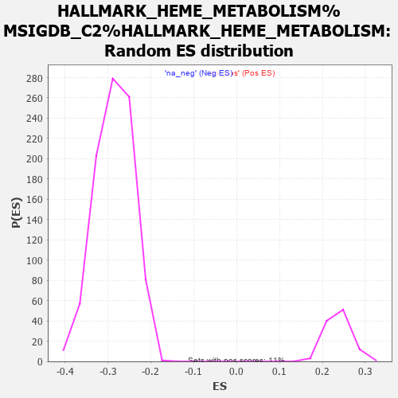

| | | Dataset | MBD2KO_post.rnk |
| Phenotype | NoPhenotypeAvailable |
| Upregulated in class | na_pos |
| GeneSet | HALLMARK_HEME_METABOLISM%MSIGDB_C2%HALLMARK_HEME_METABOLISM |
| Enrichment Score (ES) | 0.8595996 |
| Normalized Enrichment Score (NES) | 3.6183977 |
| Nominal p-value | 0.0 |
| FDR q-value | 0.0 |
| FWER p-Value | 0.0 |
Table: GSEA Results Summary
 Fig 1: Enrichment plot: HALLMARK_HEME_METABOLISM%MSIGDB_C2%HALLMARK_HEME_METABOLISM
Fig 1: Enrichment plot: HALLMARK_HEME_METABOLISM%MSIGDB_C2%HALLMARK_HEME_METABOLISM
Profile of the Running ES Score & Positions of GeneSet Members on the Rank Ordered List
| PROBE | GENE SYMBOL | GENE_TITLE | RANK IN GENE LIST | RANK METRIC SCORE | RUNNING ES | CORE ENRICHMENT | | 1 | TRIM10 | | | 0 | 17.813 | 0.0149 | Yes |
| 2 | SLC4A1 | | | 2 | 15.364 | 0.0277 | Yes |
| 3 | SLC2A1 | | | 4 | 15.058 | 0.0402 | Yes |
| 4 | SNCA | | | 9 | 13.898 | 0.0516 | Yes |
| 5 | SLC25A37 | | | 10 | 13.673 | 0.0630 | Yes |
| 6 | ALAS2 | | | 13 | 13.516 | 0.0742 | Yes |
| 7 | BPGM | | | 18 | 12.840 | 0.0846 | Yes |
| 8 | AGPAT4 | | | 24 | 12.439 | 0.0947 | Yes |
| 9 | GYPB | | | 25 | 12.407 | 0.1051 | Yes |
| 10 | ATG4A | | | 26 | 12.382 | 0.1154 | Yes |
| 11 | SELENBP1 | | | 29 | 12.261 | 0.1255 | Yes |
| 12 | YPEL5 | | | 32 | 11.978 | 0.1354 | Yes |
| 13 | TSPAN5 | | | 33 | 11.963 | 0.1454 | Yes |
| 14 | RAP1GAP | | | 36 | 11.761 | 0.1551 | Yes |
| 15 | TNS1 | | | 39 | 11.709 | 0.1648 | Yes |
| 16 | NUDT4 | | | 40 | 11.697 | 0.1746 | Yes |
| 17 | KAT2B | | | 43 | 11.597 | 0.1841 | Yes |
| 18 | DCAF11 | | | 44 | 11.558 | 0.1938 | Yes |
| 19 | FOXO3 | | | 46 | 11.493 | 0.2034 | Yes |
| 20 | OPTN | | | 51 | 11.355 | 0.2126 | Yes |
| 21 | RHAG | | | 54 | 11.321 | 0.2219 | Yes |
| 22 | UROS | | | 58 | 11.283 | 0.2311 | Yes |
| 23 | NCOA4 | | | 59 | 11.234 | 0.2405 | Yes |
| 24 | CLCN3 | | | 60 | 11.215 | 0.2499 | Yes |
| 25 | GYPA | | | 62 | 11.187 | 0.2592 | Yes |
| 26 | CPOX | | | 65 | 10.965 | 0.2682 | Yes |
| 27 | TSPO2 | | | 66 | 10.953 | 0.2774 | Yes |
| 28 | MYL4 | | | 68 | 10.934 | 0.2865 | Yes |
| 29 | SLC30A1 | | | 73 | 10.712 | 0.2952 | Yes |
| 30 | GLRX5 | | | 77 | 10.597 | 0.3038 | Yes |
| 31 | MXI1 | | | 80 | 10.498 | 0.3125 | Yes |
| 32 | EPB42 | | | 84 | 10.438 | 0.3210 | Yes |
| 33 | SLC22A4 | | | 88 | 10.362 | 0.3294 | Yes |
| 34 | ERMAP | | | 89 | 10.324 | 0.3381 | Yes |
| 35 | PRDX2 | | | 95 | 10.196 | 0.3463 | Yes |
| 36 | RBM38 | | | 97 | 10.158 | 0.3547 | Yes |
| 37 | HMBS | | | 100 | 10.103 | 0.3630 | Yes |
| 38 | CCND3 | | | 104 | 10.050 | 0.3712 | Yes |
| 39 | KDM7A | | | 106 | 9.980 | 0.3795 | Yes |
| 40 | RHCE | | | 108 | 9.978 | 0.3878 | Yes |
| 41 | E2F2 | | | 110 | 9.941 | 0.3960 | Yes |
| 42 | ENDOD1 | | | 115 | 9.860 | 0.4040 | Yes |
| 43 | GYPE | | | 116 | 9.836 | 0.4122 | Yes |
| 44 | MOCOS | | | 119 | 9.761 | 0.4202 | Yes |
| 45 | UBAC1 | | | 120 | 9.760 | 0.4284 | Yes |
| 46 | OSBP2 | | | 121 | 9.755 | 0.4366 | Yes |
| 47 | SLC30A10 | | | 130 | 9.636 | 0.4441 | Yes |
| 48 | ACSL6 | | | 136 | 9.440 | 0.4516 | Yes |
| 49 | NFE2 | | | 137 | 9.423 | 0.4595 | Yes |
| 50 | RHD | | | 144 | 9.285 | 0.4668 | Yes |
| 51 | XK | | | 153 | 9.133 | 0.4739 | Yes |
| 52 | DMTN | | | 158 | 9.086 | 0.4812 | Yes |
| 53 | GYPC | | | 159 | 9.085 | 0.4888 | Yes |
| 54 | KLF3 | | | 167 | 8.987 | 0.4959 | Yes |
| 55 | UROD | | | 175 | 8.927 | 0.5028 | Yes |
| 56 | GCLC | | | 178 | 8.905 | 0.5102 | Yes |
| 57 | TRAK2 | | | 180 | 8.887 | 0.5175 | Yes |
| 58 | FECH | | | 184 | 8.846 | 0.5247 | Yes |
| 59 | CAT | | | 185 | 8.821 | 0.5321 | Yes |
| 60 | NARF | | | 192 | 8.734 | 0.5390 | Yes |
| 61 | ABCG2 | | | 207 | 8.550 | 0.5451 | Yes |
| 62 | PPP2R5B | | | 212 | 8.511 | 0.5520 | Yes |
| 63 | BLVRB | | | 215 | 8.458 | 0.5589 | Yes |
| 64 | SLC6A9 | | | 221 | 8.343 | 0.5656 | Yes |
| 65 | SPTA1 | | | 225 | 8.253 | 0.5722 | Yes |
| 66 | ADIPOR1 | | | 237 | 8.011 | 0.5782 | Yes |
| 67 | GAPVD1 | | | 248 | 7.876 | 0.5841 | Yes |
| 68 | TAL1 | | | 255 | 7.783 | 0.5902 | Yes |
| 69 | ALAD | | | 262 | 7.741 | 0.5962 | Yes |
| 70 | HBZ | | | 263 | 7.737 | 0.6027 | Yes |
| 71 | ELL2 | | | 268 | 7.719 | 0.6089 | Yes |
| 72 | CA2 | | | 272 | 7.695 | 0.6151 | Yes |
| 73 | PIGQ | | | 282 | 7.612 | 0.6208 | Yes |
| 74 | PDZK1IP1 | | | 283 | 7.611 | 0.6272 | Yes |
| 75 | BACH1 | | | 286 | 7.578 | 0.6334 | Yes |
| 76 | EPB41 | | | 288 | 7.546 | 0.6396 | Yes |
| 77 | LPIN2 | | | 304 | 7.380 | 0.6448 | Yes |
| 78 | TFRC | | | 306 | 7.365 | 0.6509 | Yes |
| 79 | RNF123 | | | 308 | 7.358 | 0.6569 | Yes |
| 80 | HAGH | | | 330 | 7.218 | 0.6615 | Yes |
| 81 | ABCB6 | | | 336 | 7.166 | 0.6671 | Yes |
| 82 | SLC7A11 | | | 343 | 7.115 | 0.6727 | Yes |
| 83 | SMOX | | | 356 | 7.010 | 0.6777 | Yes |
| 84 | BTG2 | | | 358 | 6.977 | 0.6835 | Yes |
| 85 | AHSP | | | 372 | 6.854 | 0.6883 | Yes |
| 86 | RIOK3 | | | 376 | 6.816 | 0.6938 | Yes |
| 87 | CDR2 | | | 385 | 6.747 | 0.6989 | Yes |
| 88 | KHNYN | | | 391 | 6.700 | 0.7041 | Yes |
| 89 | CDC27 | | | 392 | 6.692 | 0.7097 | Yes |
| 90 | EPOR | | | 400 | 6.656 | 0.7148 | Yes |
| 91 | MOSPD1 | | | 410 | 6.605 | 0.7197 | Yes |
| 92 | DAAM1 | | | 418 | 6.559 | 0.7247 | Yes |
| 93 | EIF2AK1 | | | 419 | 6.546 | 0.7302 | Yes |
| 94 | RCL1 | | | 425 | 6.502 | 0.7353 | Yes |
| 95 | SPTB | | | 438 | 6.445 | 0.7398 | Yes |
| 96 | RNF19A | | | 439 | 6.441 | 0.7452 | Yes |
| 97 | MKRN1 | | | 447 | 6.337 | 0.7500 | Yes |
| 98 | PPOX | | | 457 | 6.298 | 0.7546 | Yes |
| 99 | ISCA1 | | | 464 | 6.256 | 0.7595 | Yes |
| 100 | NFE2L1 | | | 474 | 6.180 | 0.7640 | Yes |
| 101 | KEL | | | 501 | 6.044 | 0.7672 | Yes |
| 102 | SLC11A2 | | | 508 | 6.000 | 0.7718 | Yes |
| 103 | PICALM | | | 515 | 5.923 | 0.7764 | Yes |
| 104 | EZH1 | | | 518 | 5.896 | 0.7812 | Yes |
| 105 | XPO7 | | | 541 | 5.767 | 0.7844 | Yes |
| 106 | CLIC2 | | | 550 | 5.672 | 0.7886 | Yes |
| 107 | ARHGEF12 | | | 555 | 5.634 | 0.7930 | Yes |
| 108 | CTNS | | | 558 | 5.629 | 0.7976 | Yes |
| 109 | FTCD | | | 591 | 5.412 | 0.7999 | Yes |
| 110 | PSMD9 | | | 605 | 5.338 | 0.8035 | Yes |
| 111 | MARK3 | | | 625 | 5.251 | 0.8065 | Yes |
| 112 | MAP2K3 | | | 640 | 5.164 | 0.8098 | Yes |
| 113 | ANK1 | | | 666 | 5.022 | 0.8123 | Yes |
| 114 | RANBP10 | | | 676 | 4.928 | 0.8158 | Yes |
| 115 | DCUN1D1 | | | 706 | 4.795 | 0.8178 | Yes |
| 116 | BSG | | | 736 | 4.691 | 0.8197 | Yes |
| 117 | MPP1 | | | 759 | 4.555 | 0.8219 | Yes |
| 118 | HTRA2 | | | 760 | 4.549 | 0.8257 | Yes |
| 119 | TOP1 | | | 774 | 4.484 | 0.8286 | Yes |
| 120 | CCDC28A | | | 794 | 4.396 | 0.8309 | Yes |
| 121 | SLC6A8 | | | 821 | 4.283 | 0.8327 | Yes |
| 122 | FBXO34 | | | 842 | 4.160 | 0.8347 | Yes |
| 123 | TCEA1 | | | 875 | 4.056 | 0.8359 | Yes |
| 124 | HBD | | | 877 | 4.053 | 0.8392 | Yes |
| 125 | ADD2 | | | 889 | 4.025 | 0.8418 | Yes |
| 126 | NEK7 | | | 900 | 4.001 | 0.8445 | Yes |
| 127 | GATA1 | | | 908 | 3.977 | 0.8473 | Yes |
| 128 | ASNS | | | 909 | 3.977 | 0.8506 | Yes |
| 129 | GCLM | | | 916 | 3.959 | 0.8535 | Yes |
| 130 | MGST3 | | | 918 | 3.956 | 0.8567 | Yes |
| 131 | ATP6V0A1 | | | 1000 | 3.661 | 0.8541 | Yes |
| 132 | AQP3 | | | 1009 | 3.642 | 0.8566 | Yes |
| 133 | KLF1 | | | 1026 | 3.569 | 0.8585 | Yes |
| 134 | SLC10A3 | | | 1112 | 3.305 | 0.8553 | Yes |
| 135 | UCP2 | | | 1132 | 3.245 | 0.8567 | Yes |
| 136 | USP15 | | | 1195 | 3.038 | 0.8548 | Yes |
| 137 | P4HA2 | | | 1218 | 2.959 | 0.8558 | Yes |
| 138 | SEC14L1 | | | 1244 | 2.899 | 0.8565 | Yes |
| 139 | MINPP1 | | | 1272 | 2.828 | 0.8569 | Yes |
| 140 | TMEM9B | | | 1286 | 2.792 | 0.8583 | Yes |
| 141 | HBB | | | 1302 | 2.758 | 0.8596 | Yes |
| 142 | SLC25A38 | | | 1411 | 2.526 | 0.8541 | No |
| 143 | CA1 | | | 1441 | 2.462 | 0.8542 | No |
| 144 | CTSE | | | 1549 | 2.216 | 0.8485 | No |
| 145 | CIR1 | | | 1576 | 2.161 | 0.8485 | No |
| 146 | ACKR1 | | | 1608 | 2.101 | 0.8481 | No |
| 147 | PGLS | | | 1675 | 1.967 | 0.8451 | No |
| 148 | RAD23A | | | 1713 | 1.899 | 0.8441 | No |
| 149 | LRP10 | | | 1822 | 1.752 | 0.8380 | No |
| 150 | FN3K | | | 1843 | 1.728 | 0.8380 | No |
| 151 | MFHAS1 | | | 1854 | 1.712 | 0.8387 | No |
| 152 | TRIM58 | | | 1964 | 1.579 | 0.8324 | No |
| 153 | HBQ1 | | | 2066 | 1.440 | 0.8265 | No |
| 154 | TMCC2 | | | 2120 | 1.389 | 0.8240 | No |
| 155 | FBXO9 | | | 2127 | 1.382 | 0.8247 | No |
| 156 | C3 | | | 2408 | 1.088 | 0.8060 | No |
| 157 | VEZF1 | | | 2455 | 1.050 | 0.8036 | No |
| 158 | HDGF | | | 2512 | 1.006 | 0.8005 | No |
| 159 | TNRC6B | | | 2730 | 0.831 | 0.7860 | No |
| 160 | NR3C1 | | | 2755 | 0.816 | 0.7850 | No |
| 161 | CTSB | | | 3427 | 0.427 | 0.7382 | No |
| 162 | RBM5 | | | 3428 | 0.426 | 0.7386 | No |
| 163 | SIDT2 | | | 3497 | 0.399 | 0.7342 | No |
| 164 | MBOAT2 | | | 3524 | 0.385 | 0.7327 | No |
| 165 | ACP5 | | | 3698 | 0.311 | 0.7208 | No |
| 166 | GMPS | | | 3755 | 0.291 | 0.7171 | No |
| 167 | IGSF3 | | | 3827 | 0.260 | 0.7123 | No |
| 168 | DCAF10 | | | 3939 | 0.222 | 0.7047 | No |
| 169 | PC | | | 3947 | 0.218 | 0.7044 | No |
| 170 | LMO2 | | | 4540 | 0.064 | 0.6629 | No |
| 171 | ARL2BP | | | 4568 | 0.059 | 0.6611 | No |
| 172 | FBXO7 | | | 4874 | -0.006 | 0.6397 | No |
| 173 | ADD1 | | | 4877 | -0.007 | 0.6395 | No |
| 174 | FOXJ2 | | | 4913 | -0.012 | 0.6371 | No |
| 175 | TFDP2 | | | 5935 | -0.233 | 0.5656 | No |
| 176 | SDCBP | | | 6132 | -0.282 | 0.5521 | No |
| 177 | BTRC | | | 8592 | -1.126 | 0.3805 | No |
| 178 | HTATIP2 | | | 8700 | -1.172 | 0.3739 | No |
| 179 | BLVRA | | | 9039 | -1.331 | 0.3513 | No |
| 180 | SYNJ1 | | | 10168 | -1.923 | 0.2738 | No |
| 181 | LAMP2 | | | 10670 | -2.219 | 0.2405 | No |
| 182 | HEBP1 | | | 10935 | -2.426 | 0.2240 | No |
| 183 | NNT | | | 11862 | -3.176 | 0.1616 | No |
| 184 | CAST | | | 12196 | -3.494 | 0.1412 | No |
| 185 | BNIP3L | | | 12727 | -4.122 | 0.1074 | No |
| 186 | GDE1 | | | 12782 | -4.190 | 0.1071 | No |
| 187 | ALDH6A1 | | | 13316 | -4.997 | 0.0739 | No |
| 188 | BMP2K | | | 13555 | -5.450 | 0.0618 | No |
Table: GSEA details [plain text format]

Fig 2: HALLMARK_HEME_METABOLISM%MSIGDB_C2%HALLMARK_HEME_METABOLISM: Random ES distribution
Gene set null distribution of ES for HALLMARK_HEME_METABOLISM%MSIGDB_C2%HALLMARK_HEME_METABOLISM